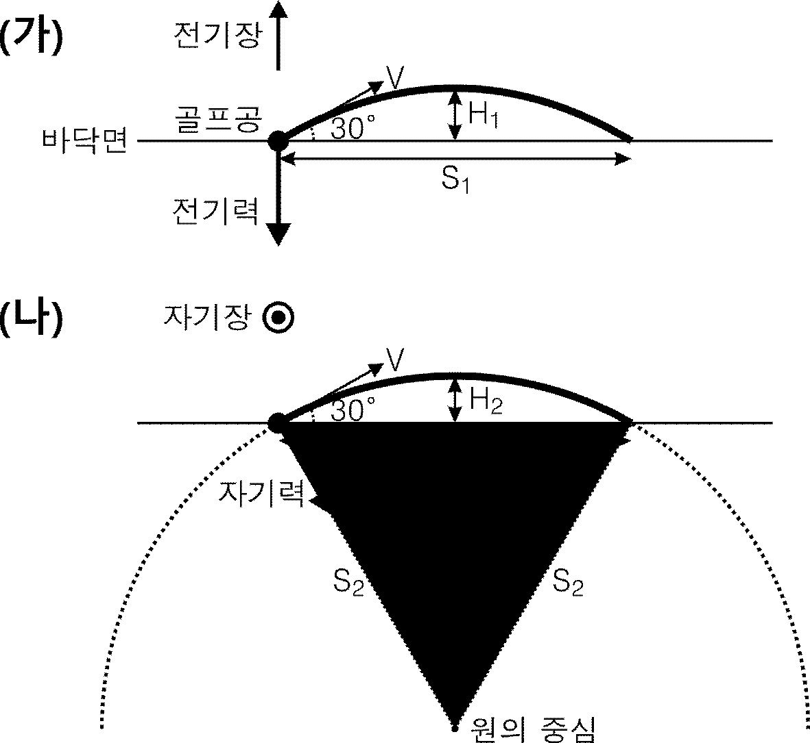
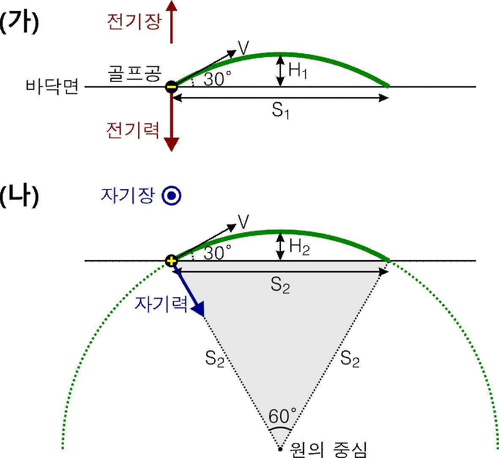
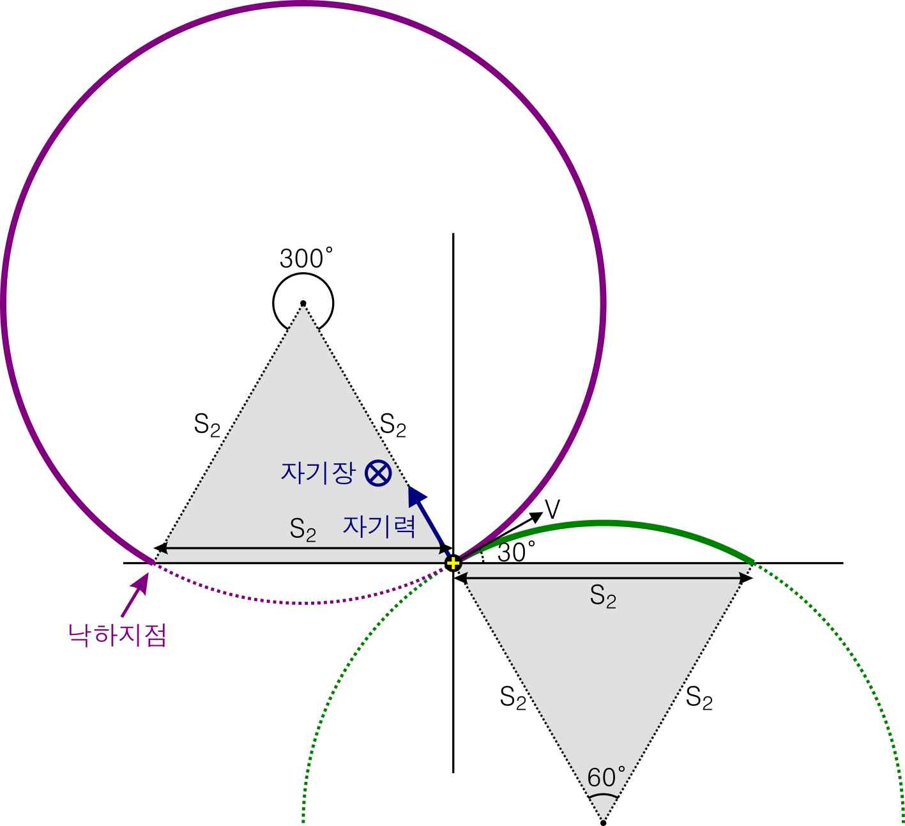

해설 2
(1) 그림 (가)의 골프공은 아래 방향으로 전기력을 받아야 하므로 음전하를 띠어야 하고, 아래 방향의 가속도를 갖는 등가속도 포물선 운동을 한다. 그림 (나)의 골프공은 (운동 방향에 수직하면서) 아래 방향으로의 자기력을 받아야 하므로 양전하를 띠어야 하고, 원호를 따라 등속 원운동을 한다. (이때 원호의 중심각은 60°임)


(2) 그림 (가)의 골프공의 체공 시간과 가속도를 각각 \(T_1\), \(a\)라 하면,
\[H_1 = \frac{(V\sin 30°)^2}{2a}, \quad T_1 = \frac{2V\sin 30°}{a} = \frac{4H_1}{V\sin 30°}, \quad S_1 = (V\cos 30°)T_1 = \frac{4H_1}{\tan 30°}\]
그림 (나)의 골프공의 수평 도달거리는 원운동 반경과 같으므로 (회색 삼각형이 정삼각형임을 고려), \(H_2 = (1 - \cos 30°)S_2\)
두 골프공이 서로 같은 최대 높이까지 올라갔으므로,
\[H_1 = H_2 = (1 - \cos 30°)S_2 \quad \rightarrow \quad S_2 = \frac{\tan 30°}{4(1 - \cos 30°)}S_1 = \frac{2 + \sqrt{3}}{2\sqrt{3}}S_1\]
\[S_1 = 2\sqrt{3} \text{ km} \quad \rightarrow \quad S_2 = (2 + \sqrt{3}) \text{ km}\]
또한 그림 (나)에서 골프공의 원호 궤적의 길이는 \(\dfrac{\pi}{3}S_2\)이므로 체공 시간은
\[T_2 = \frac{\pi S_2}{3V} = \frac{\pi}{3} \cdot \frac{2 + \sqrt{3}}{2\sqrt{3}} T_1 \cos 30° = \frac{(2 + \sqrt{3})\pi}{12} T_1 = 5(2 + \sqrt{3})\pi \text{ (초)}\]
이제 그림 (나)에서 자기장의 방향을 반대로 바꿔서 실험을 반복하면 아래 그림과 같이 골프공이 받는 자기력의 방향이 반대로 바뀌어 중심각이 300°인 원호 궤적을 따라 등속 원운동을 한다. 따라서 체공 시간은 5배로 늘어난 \(5T_2 = 25(2 + \sqrt{3})\pi\) (초)이고 출발 지점으로부터 왼쪽으로 \(S_2 = (2 + \sqrt{3})\) km의 수평 도달거리만큼 떨어진 지점에 낙하한다.
